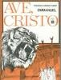

"Um naufrágio. Um atol. Sozinho com a tiritante filha de uma passageira
que se afogou. Minha querida, isto é só uma brincadeira! Que
maravilhosas aventuras eu fantasiava, sentado no duro banco de alguma
pracinha, enquanto fingia estar imerso na leitura de um trêmulo livro.
As ninfetas brincando em torno do palácio intelectual, como se ele
fosse uma estátua bem conhecida ou mera extensão da sombra rendada de
alguma velha árvore. Certa vez, um espécime de irretocável beleza,
vestindo uma túnica enxadrezada, plantou com intrépido seu pé
fortemente armado e, quase roçando em mim, esticou os braços nus e
esguios para apertar a correia do patim de rodas; e eu me dissolvi ao
sol, o livro servindo como folha de parreira, quando aqueles cachos
castanhos-claros caíram sobre o joelho esfolado, e a sombra de que eu
era parte palpitou e se derreteu sobre sua radiosa perna, bem juntinho
a meu rosto camaleônico." (Lolita de Vladimir Nabokov).
O que faz deste texto uma obra de arte? O uso das metáforas (palácio
intelectual, folha de parreira); as imagens ( um naufrágio, uma
estátua); os adjetivos (tiritante, trêmulo); a intensidades dos
sentimentos (eu me dissolvi ao sol)? Sim, tudo isso junto. Todos os
recursos estilísticos nas mãos de um ‘artífice’ são capazes de produzir
o Belo – esse conceito vago e permeável, pouco científico, mas, por
enquanto, necessário.
Qualquer um, minimamente educado em artes, saberá reconhecer a beleza
de um texto como este de Nabokov. Alguns conseguirão ver, além do
erótico, o apelo estético da narrativa. Sentirão a poesia das palavras.
Estes raros compreenderão o conceito de Belo. O autor, por outro lado,
pensava em algo além do prazer estético: provavelmente queria falar do
Erótico, da carnalidade do mundo. Em outras palavras, sua arte tinha um
alvo preciso: o homem comum, com suas inquietações mercurianas. Por
isso, nada de humano lhe é estranho; a narrativa prossegue no
enredamento da vida cotidiana. Tudo ali é vida comum, nada alcança de
sublime. Mesmo assim, a narrativa não é pobre, pois o ‘artífice’ lhe
modelou as letras. Ou seja, o mesmo tema nas mãos de um artista sem
talento se tornaria literatura erótica. Esse ‘plus’ é encontrado,
exatamente, no manejamento dos recursos estilísticos. São as imagens e
os adjetivos, empregados com precisão, que garantem a força das
ironias, dos cinismos, do desespero e da intensidade da tensão sexual
do texto.
O autor foi buscar esses recursos no mundo, onde grassam as escolas
literárias e as vaidades momentâneas de cada grupo. Ele precisava falar
a língua do mundo para ser entendido pelo mundo. É por essa razão que
toda a sua narrativa segue uma orientação secular: o tema, a linguagem,
a estrutura, o ambiente, etc., tudo fala do mundo e de coisas do mundo.
Os que são acostumados com o mundo (e não são poucos...) reconhecem a
beleza do romance e, dificilmente, conseguirão identificar a beleza de
outros textos que não apresentem esses ‘recursos’.
É, por isso, que os minimamente educados em artes recebem com
estranheza os romances de Emmanuel, o autor espiritual que escreveu
através dos dedos de Chico Xavier... Não se sabe se Emmanuel é um
heterônimo ou, de fato, uma entidade: este detalhe permanecerá por
algum tempo sem solução. Por ora, restou os cinco romances de sua
autoria (além de algumas centenas de outros livros, evidentemente
doutrinários), que, com respeito a todos os cânones da literatura
nacional, deveriam, pelo menos, ser tratados com mais respeito pelo
meio acadêmico das Universidades, pela “Academia” .
Os romances Há dois mil anos, 50 anos depois e Ave, Cristo contam a
saga autobiográfica do autor através de sucessivas reencarnações. É
ainda a veia narcisista do escritor que quer falar de si, mas é também
a sinceridade de uma preocupação evangélica, indisfarçável a cada
linha.
Não se encontrará nesses romances os artifícios literários da
literatura comum e, talvez, por isso, eles não tenham sido apreciados
com a devida seriedade. A “Academia”, além de afastar, peremptória, o
tema constrangedor da ‘reencarnação’, prefere olhar o próprio umbigo e
estudar o cânone que ela mesma escolheu...
A trilogia, no entanto, é obra de arte, mesmo vista com o monóculo da
ciência literária. Não há erro de estrutura: todas as narrativas são
perfeitas, não sobrando uma trama, não faltando um personagem; não há
erro de linguagem: todas as narrativas são coerentemente evangélicas,
nenhuma palavra profana, nenhum sintagma indeterminado, cada personagem
com sua peculiaridade linguística, o vocabulu de latinista; não há erro
de historicidade: todas as informações podem ser rastreadas, desde a
cartografia do Império Romano, até a etiologia das pequenas cidades da
Itália, passando pelo nome dos Cesares e das ‘vias’ da capital.
Emmanuel produz uma literatura evangélica no sentido mais puro
possível. Certo, que se sente falta do ardor estético que se esta
acostumado: a intensidade erótico-linguística de Nabokov; a
inteligência irônica de Machado de Assis; a raiva de Maiakoviski; o
lirismo latino de Neruda ou a melancolia de Nauro Machado. Mas,
convenha-se, Emmanuel não pode pregar o Evangelho com a mesma pena das
dores humanas. Literatura evangélica é exatamente depurar-se dos
excessos humanos: dizer a verdade do Amor para construir a edificação
do mundo. Daí a necessidade de chorar! As lágrimas, para quem as sabe
alcançar na leitura dessas obras, são também uma forma de angelizar-se.
E o alvo foi atingido.
A Academia precisa aprender a reconhecer na ‘boa’ literatura evangélica
as mesmas qualidades literárias da literatura secular. O paradigma da
‘espiritualidade’ pode ser tão válido quanto o da ‘lubricitate’. O
homem é um ser total, talvez, como dizia Nietzsche, uma corda atada
entre o animal e o além do homem:
"Deslumbrante caminho descerrara-se nos céus...
Embriagado de júbilo, Quinto Varro colou o filho de encontro ao peito
e, rodeado pela grande assembléia dos amigos, avançou para o alto, como
um lutador vitorioso que conseguira subtrair ao pântano de sombra um
diamante castigado pelos cinzéis da vida, para fazê-lo brilhar à plena
luz...
Cá em baixo, a crueldade gritava, em regozijo.
A chusma delirava na contemplação de corpos incendidos, no sinistro
banquete da carnificina e da morte, mas, ao longe, no firmamento
ilimitado, cuja paz retratava o amor inalterável de Deus, as estrelas
fulguravam, apontando aos homens de boa vontade glorioso porvir..."
(Ave, Cristo de Emmanuel).
01/06/2007
Emmanuel e a Literatura Evangélica
09:25 — Escrito em Tese | Comentários registrados no original: 1 | Tags: Emmanuel Lolita Literatura Evangélica Ave Cristo